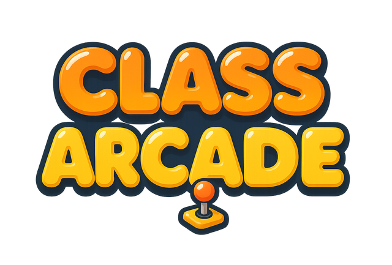
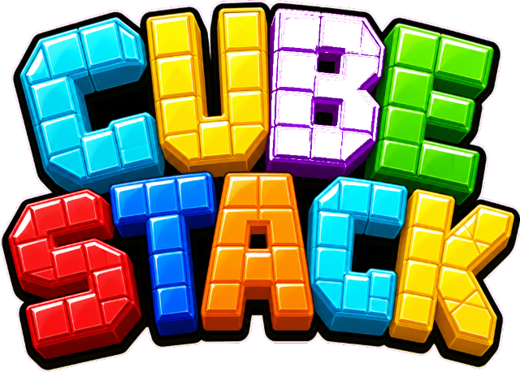

캐릭터를 골라요! 🎮
마음에 드는 캐릭터를 하나 선택하면 게임에서 그 모습으로 나와요.

우리 반이 한 방에 모여 실시간 미니게임!
TV·빔프로젝터에 띄우는 화면이에요.
방을 열면 학생들이 찍을 QR코드가 나옵니다.
내 폰으로 게임에 참가해요.
TV의 QR을 찍었다면 이미 입장 화면이 열려 있어요!
마음에 드는 캐릭터를 하나 선택하면 게임에서 그 모습으로 나와요.
입장 완료! 선생님이 시작하면
자동으로 게임이 열립니다. TV를 보세요 👀
